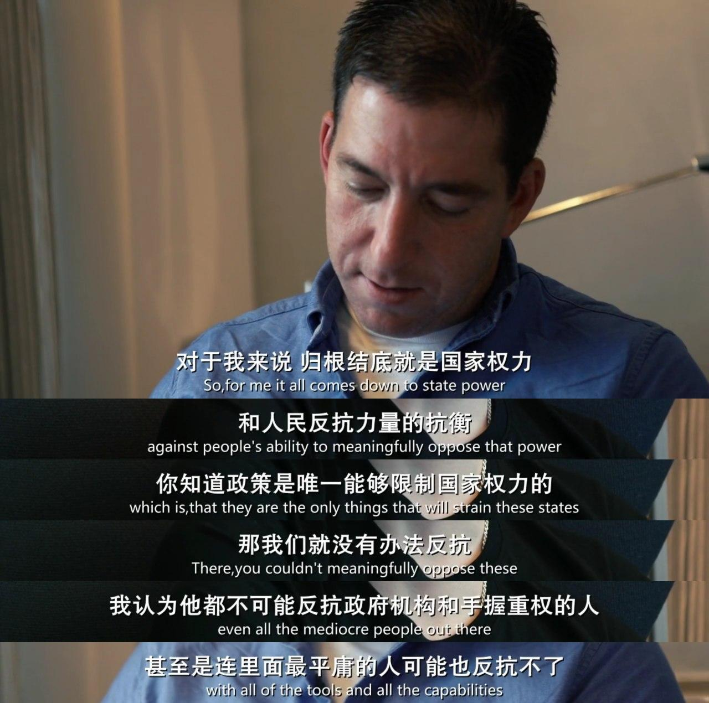
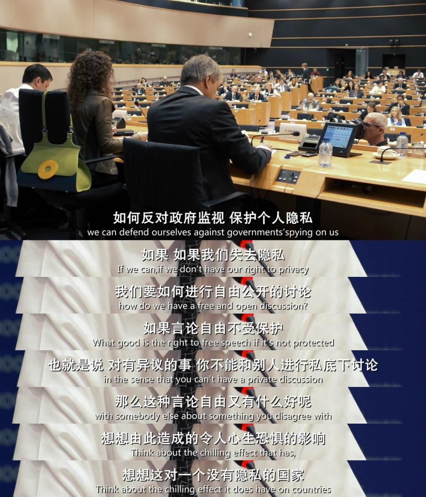
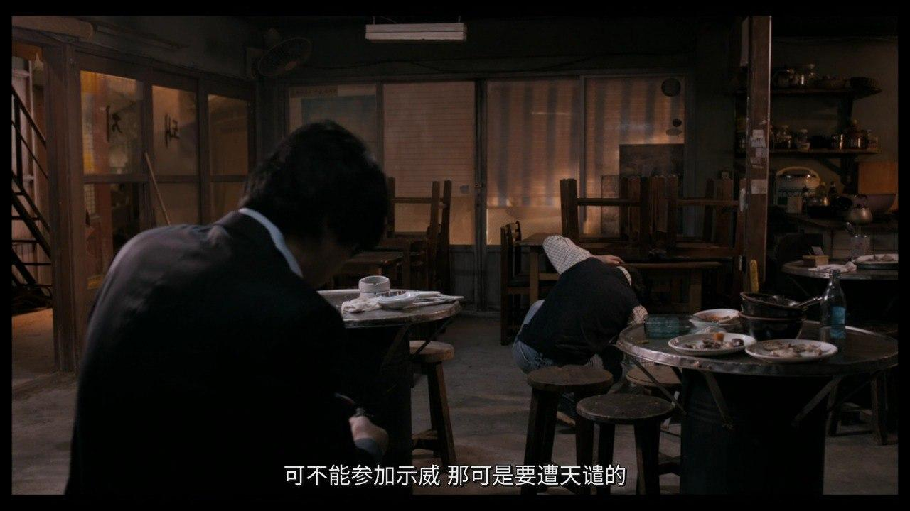
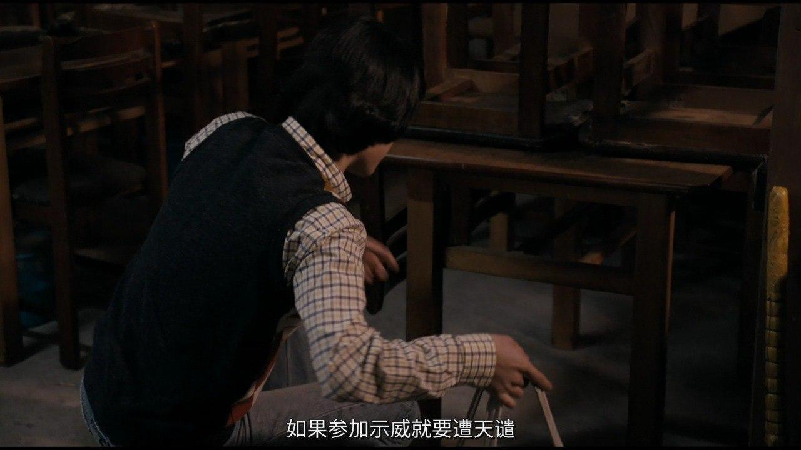

弱者的反抗 发表于 2020-06-04 更新于 2020-06-13 分类于 life Disqus： 本文字数： 204 阅读时长 ≈ 1 分钟 如果說民眾上街遊行示威是違法犯罪的話，那麼，那些逼大家迫不得已上街遊行的人所犯下的是什麼罪又該接受到什麼懲罰？ 凛冬烈火：乌克兰为自由而战 第四公民   辩护人   見證了這段歷史，越來越能體會感觸到：當今世界，專制的權力還在奴役人的自由；極權的統治還在控制人的思想；習慣性的不思考和無判斷將人傾向愚昧和自我欺騙，於是我們共同造就了這台極權專制的機器，我們服從這老大哥的思想，一切都要政治正確。—-木子 2020-06-04 晚